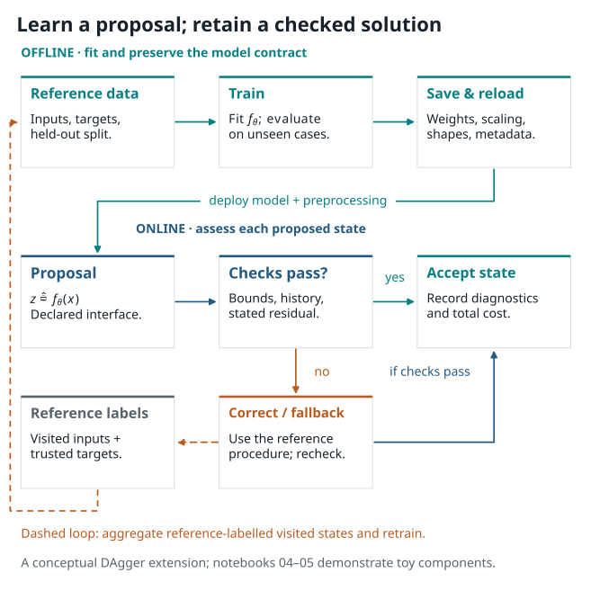

7. Train, save, reload, adapters, and checked proposals#
{kind=link}

Figure 7.1 A learning component has defined inputs, outputs, and physics checks, just as the reference calculation does.#
7.1. The Best of Both Worlds: Fast AI Proposals & Physics Truth#
Why combine deep learning with numerical mechanics solvers in fracture simulation?
Traditional finite element solvers are exact, rigorous, and trustworthy: they enforce mechanical equilibrium, respect conservation laws, and satisfy boundary conditions. However, for non-linear problems like crack propagation, solving large coupled linear systems over dozens or hundreds of quasi-static load increments is computationally expensive.
On the other hand, modern deep learning models (such as neural networks and neural operators) are extraordinarily fast: once trained, evaluating a forward pass takes just a fraction of a millisecond. Yet, on their own, purely data-driven models can produce unphysical predictions: they can predict negative damage (\(d < 0\)), exceed physical bounds (\(d > 1\)), or violate momentum balance when tested outside their immediate training distribution.
The solution is a hybrid physics-AI architecture:
Fast Neural Proposal: A neural surrogate rapidly suggests a trial displacement or damage field \(\widehat{d}\).
Physics-Based Gating: We substitute the proposal into the physical PDE weak form to evaluate its equilibrium residual \(\|R(\widehat{d})\|\).
Selective Solver Refinement: If the residual is small, we accept the proposal immediately. If the residual is high, the neural prediction serves as an initial guess for a trusted numerical solver (like PhAST’s staggered solver), cutting iteration count while guaranteeing physical accuracy.
In this chapter, we explore how to build and evaluate these learning components: defining clear data contracts, serializing and reloading model checkpoints reproducibly, evaluating physical residuals, and building robust hybrid workflows.
7.2. Decide What is Being Learned#
The phrase “use machine learning for fracture” hides several different tasks. Name the role precisely.
Surrogate: approximate a map from stated inputs to a stated output.
Proposal model: supply an initial damage field, displacement field, or parameter guess to a mechanics calculation.
Adapter: convert one data representation to another, such as a mesh ordering or normalised tensor layout.
Corrector: update a proposal using a residual, an iterative solve, or a trusted reference computation.
Emulator for an observable: approximate a specified scalar response.
These roles can be combined. A model that predicts an initialisation supports the subsequent mechanics solve; a model intended to replace that solve requires evaluation of the resulting mechanical fields and observables.
7.3. A small supervised-learning contract#
Let \(x_i\) be an input representation and \(z_i\) a reference target. A simple training objective is
Before training, write down:
what each channel of \(x_i\) means, including coordinates, parameters, fields, and units;
what target \(z_i\) means and at which load step or time it is sampled;
how meshes, nodes, or quadrature points are ordered;
the training, validation, and test split rule; and
the metric and physical diagnostic reported on each split.
Normalisation belongs to this contract. If an input component is transformed as \(\tilde x=(x-\mu)/s\), save \(\mu\) and \(s\) with the model. The preprocessing state is part of the computational map reconstructed during reload.
7.4. Where does the training gradient travel?#
Distinguish three computational graphs before choosing a learning method.
Supervised fitting compares a prediction with stored targets:
A solver may have generated the targets offline. This training graph differentiates the predictor against those fixed targets.
Residual-based training evaluates a stated equation at the prediction:
The gradient passes through the residual evaluated at the prediction. Differentiating a converged state requires the solve’s derivative. Boundary conditions and branch selection matter in both cases, as the opening algebraic teaser illustrates.
Solver-in-the-loop training evaluates the consequences of a prediction:
Here \(C\) extracts the observed quantity. With fixed \(p\) and a loss depending only on \(z_N\), reverse propagation gives
These vector–Jacobian products can be evaluated directly as operator actions. An implicit adjoint may replace differentiation through every solver iteration. The differentiable-physics introduction develops this operator viewpoint. For fracture, history updates, active constraints, stopping tolerances and any detached arrays require explicit derivative conventions and checks.
The following notebooks use supervised training and residual-checked proposals on a scalar Helmholtz teaching problem.
7.5. Train, save, and reload reproducibly#
A minimal saved model package should include:
model weights and architecture configuration;
input and target normalisation parameters;
feature/channel names and tensor-shape convention;
training data identifier and split definition;
software/library version and numerical precision; and
a small reload test that compares a saved prediction against the in-memory prediction for the same declared input.
7.6. Computational lesson: train, save, reload, and compare a toy field model#
The lesson below makes the saved state visible: feature order, normalisation,
mesh signature, data split, checkpoint metadata, and a reload comparison all
appear beside the code and field plots. Begin by predicting which information
must survive serialization for a newly created model object to reproduce the
same output. The lesson uses an original ToyHelmholtzProblem to examine
the saved-model interface and prediction accuracy on a scalar field.
Hands-On Tutorial: Lab 04 (Neural Field Adapter: Training & Checkpointing)
Ready to try this in practice?
Explore the interactive tutorial: Lab 04: Neural Field Adapters (Training, Checkpointing, & Reloading).
You can read through the MLP training loops and checkpoint verification directly here in the book, or run it interactively in Google Colab with one click:
Reload test
Choose one fixed input record. Run the model before saving, reload into a new model object, run the same record, and compare the output after applying the same preprocessing. If the values differ, inspect normalisation, device/dtype, model mode, feature order, and serialised configuration before training again.
7.7. Mapping between representations#
An adapter is a stated map between representations,
For example, it may reorder nodes, concatenate a coordinate channel, project a cell-centred value to nodes, or convert units. The mapping requires enough source information to define the target and compatible physical meanings on both sides.
Ask four questions before accepting an adapter:
Does it preserve the geometry and coordinate frame?
Does it preserve the field meaning, units, and load/time index?
Does it preserve or deliberately change interpolation order?
Is there a small round-trip or reference example that checks the mapping?
A change of mesh, material parameterisation, or loading regime introduces a transfer assumption that needs its own evaluation.
7.8. From a proposal to a checked hybrid calculation#
Suppose a learned model proposes \(\widehat d\) for a damage field. A conservative hybrid workflow is
The checks might include damage bounds, irreversibility relative to the prior state, a mechanics residual, and a comparison to a reference solve on a predefined evaluation set. If a correction is used, report the cost and result of the full route, including prediction, conversion, checks, correction, and any fallback. Assess runtime improvement by comparing this complete cost with the corresponding reference calculation.
7.9. Computational lesson: accept a compatible proposal or fall back#
The next lesson reuses the toy field-model contract to test a compatible
proposal, reject a deliberately corrupted proposal by a stated residual gate,
and fall back to the reference field. Read the compatibility and residual
checks when interpreting the four field panels. The residual is defined by
the scalar ToyHelmholtzProblem. Applying this pattern to fracture requires
the fracture residual and its damage admissibility conditions.
Hands-On Tutorial: Lab 05 (Residual Evaluation & Hybrid Correction)
Ready to try this in practice?
Explore the interactive tutorial: Lab 05: Hybrid Physics-AI: Residual-Gated Proposals & Solver Correction.
You can read through the residual gating logic and solver correction steps directly here in the book, or run it interactively in Google Colab with one click:
7.10. DAgger-style data aggregation#
Distribution shift can appear when a learned proposal visits states absent from its original training records. Dataset Aggregation (often called DAgger) is one way to describe an iterative collection loop:
train a policy or proposal model on an initial reference dataset;
let the current model visit stated inputs or intermediate states;
query a trusted reference procedure for targets at those visited states;
add the labelled records to the aggregate dataset; and
retrain while keeping the final evaluation data and labels separate from model selection.
This idea is useful when the model’s own trajectory changes the data it sees. It relies on a trusted labelling procedure, recorded provenance, and separate training and final evaluation data. In mechanics, the reference procedure may fail or become inappropriate outside its assumptions; retain those outcomes when evaluating the method.
7.11. Evaluation: Physical Metrics and Model Validation#
Evaluating a machine learning model for physical problems requires examining both statistical accuracy and physical consistency. Standard mean squared error alone can be deceptive: a low average field error may mask an unphysical local stress concentration or an incorrect crack path.
A comprehensive validation protocol evaluates:
Field-Level Discrepancy:
\[ e_d = \frac{\|\widehat d - d_{\mathrm{ref}}\|_2}{\max(\|d_{\mathrm{ref}}\|_2, \epsilon)} \]measures normalized spatial disagreement across test meshes.Physical Constraints: Verify that predicted fields respect admissibility conditions (such as \(0 \le d \le 1\) and non-decreasing damage history \(d_n \ge d_{n-1}\)).
Mechanics Residuals: Substitute the predicted field directly into the governing mechanical weak form. A physically consistent prediction yields low equilibrium residuals.
Engineering Observables: Compare integral quantities of direct engineering interest, such as global reaction curves, peak load capacity, and total dissipated fracture energy.
Generalization Bounds: Report performance across varying load levels, mesh densities, and unseen geometries to characterize the model’s domain of applicability.
7.12. Exercise: identify the missing provenance#
A colleague shares a file called “best_model” and says it predicts damage on a new mesh. List four items you need before interpreting the output as a mechanics field.
Solution
Any four of the following are essential: the architecture and weights; input feature definitions and ordering; normalisation state; source and target mesh representation; coordinate frame and units; load/time step represented; the training/validation/test split; a reload comparison; and the physical checks used on the proposed field. These records give the predicted tensor its mechanical meaning. The two computational lessons provide a concrete version of this answer: the first records the model contract and reload check; the second refuses an incompatible feature order and performs a stated residual/fallback check.
7.13. Sources for this chapter#
The notebook practices draw on standard reproducible machine-learning ideas: separate evaluation data, explicit preprocessing, and persistent model state. For a practical notebook pattern with open exercises and solutions, see the Inria scikit-learn MOOC. For the tensor/autodiff ecosystem used in the companion activities, see the PyTorch documentation.